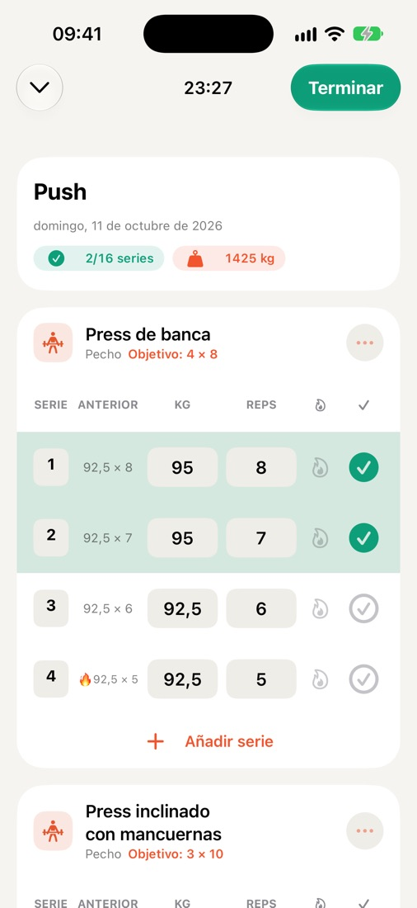
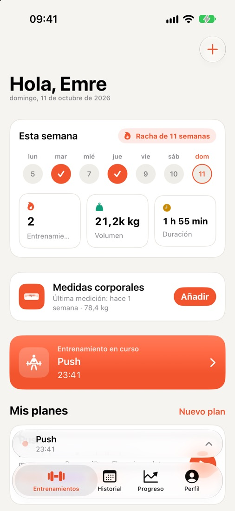
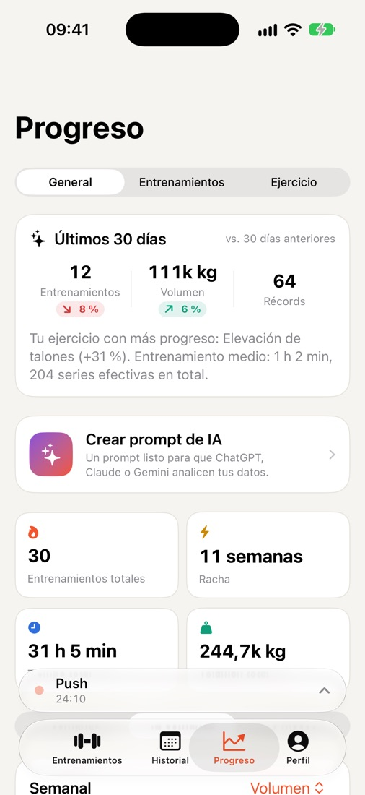
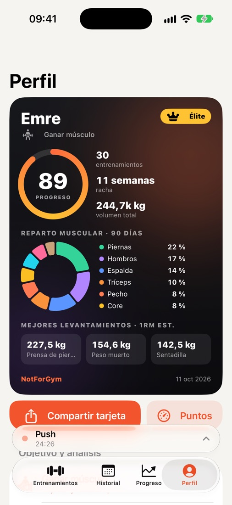
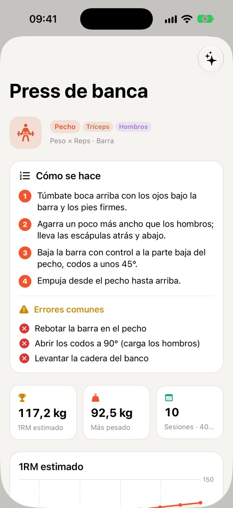
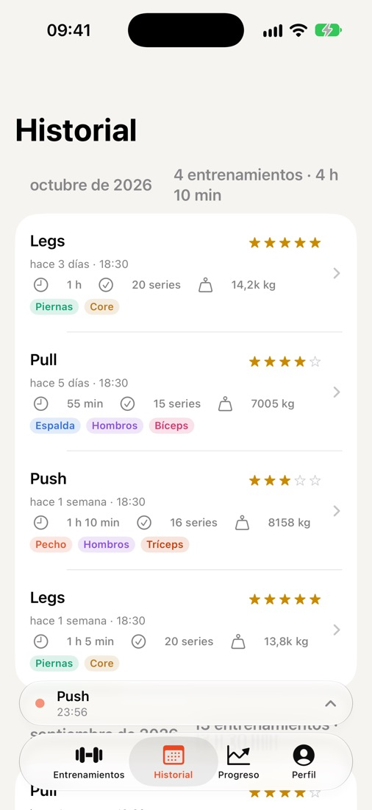

Registra cada serie.
Mira cada avance.
NotForGym es un registro de entrenamientos rápido y sin complicaciones para iPhone y Apple Watch. Tu sesión anterior aparece junto a cada serie, el temporizador de descanso funciona en la pantalla bloqueada y tu progreso se ve en récords y gráficos. Sin cuenta y sin registro.

Hecho para el rato entre series
Todo lo que necesitas en el gimnasio, nada que sobre.
Registro rápido de series
El peso y las repeticiones de la última sesión junto a cada serie. Series de calentamiento, al fallo, notas y dificultad con un toque.
Descanso y Actividad en directo
La cuenta atrás del descanso está en la pantalla bloqueada y en la Dynamic Island: completa una serie o salta el descanso sin abrir la app.
Apple Watch
Consulta tu siguiente serie, márcala y siente un toque en la muñeca cuando termine el descanso.
Progreso y récords
Gráficos de volumen semanal, 1RM estimado, récords personales y un reparto por grupos musculares que te muestra lo que estás descuidando.
Más de 250 ejercicios
Una biblioteca completa con equipamiento y músculos trabajados, además de guías paso a paso y errores comunes para los ejercicios más populares.
Medidas corporales
Sigue tu peso y tus medidas a lo largo del tiempo, con un recordatorio semanal si lo quieres.
Salud de Apple
Los entrenamientos terminados pueden guardarse en Salud para que cuenten en tus anillos de Actividad.
Sincronización con iCloud
Tus datos se sincronizan a través de tu propio iCloud privado y vuelven al reinstalar la app o al cambiar de iPhone.
Tarjeta de atleta y widget
Una tarjeta para compartir con tu puntuación de progreso, racha y mejores marcas; también como widget de inicio y de pantalla bloqueada.
Resumen listo para IA
Crea un prompt a partir de tus entrenamientos y pégalo en el asistente de IA que ya usas.
Importar y exportar CSV
Tus datos son tuyos. Exporta todo como hoja de cálculo cuando quieras, o vuelve a importarlo.
8 idiomas
English, Türkçe, Deutsch, Español, Português (Brasil), Français, Italiano y 日本語.
Un vistazo de cerca





Gratis. Todas las funciones.
- Nunca verás anuncios durante el entrenamiento
- Quita los anuncios con una compra y restáurala en cualquier dispositivo
- Sin cuenta ni suscripción
Tu entrenamiento es solo tuyo.
- Sin registro ni correo electrónico
- Los datos de salud nunca se usan para anuncios
- Borra todo con un solo botón
¿Tienes preguntas?
Consulta las preguntas frecuentes o escríbenos: leemos todos los mensajes.
Obtener ayuda